i.
The Canopy
Where light breaks through the crowns. Up here the forest trades in sun, wind and rain, and passes what it gathers down below.
A journey through the quiet beauty of our living world.
Begin the Journey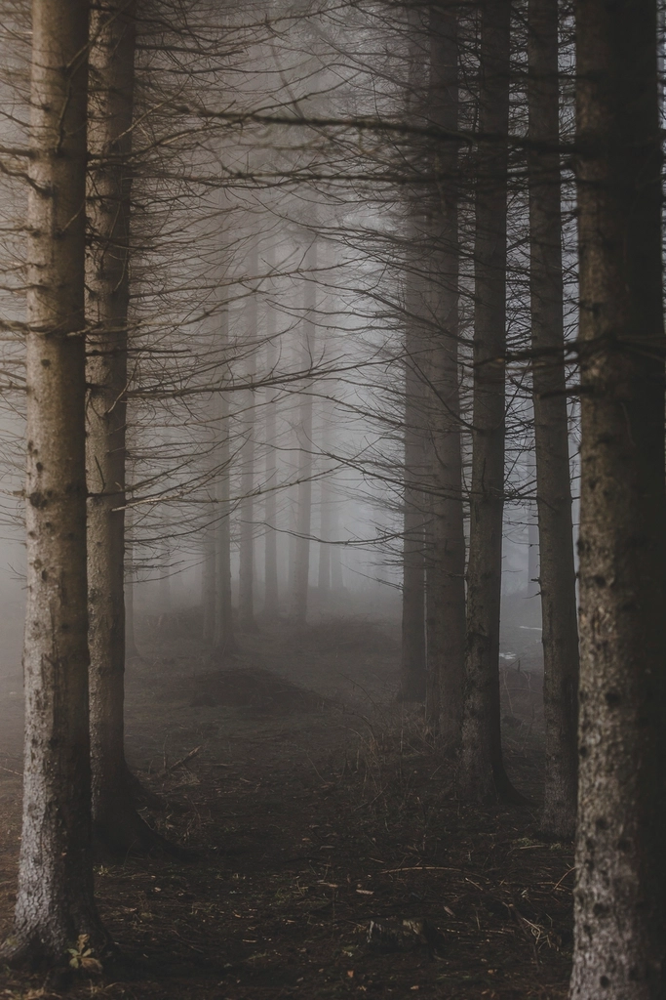
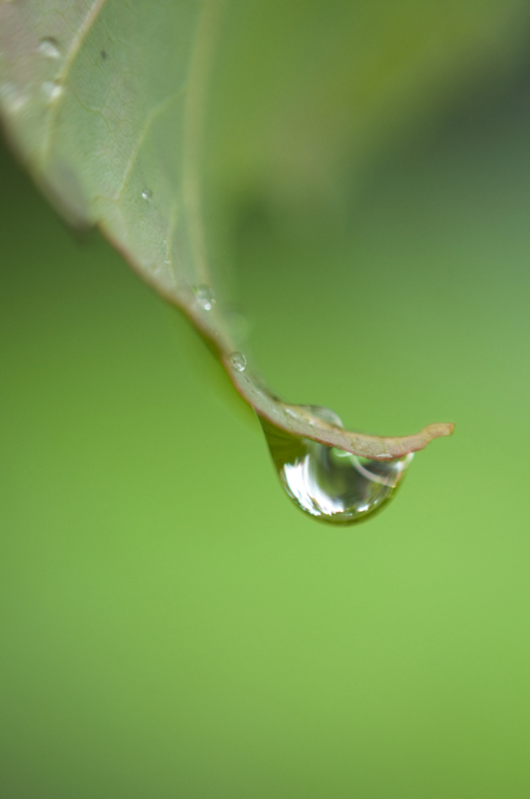
Step away from the noise. Discover the quiet rhythms that make the natural world extraordinary.
Before sunrise, a forest is never truly silent. Water moves under the moss, needles settle, a wren tests the air.
VERDANT begins here, in the pause before the day. Slow down long enough and the landscape starts to speak.
The Forest Is Alive
Where light breaks through the crowns and is passed down to everything below.
A small world of moss, leaves and first shoots, growing from fallen wood.
Soil, roots and the hidden network that feeds the trees.
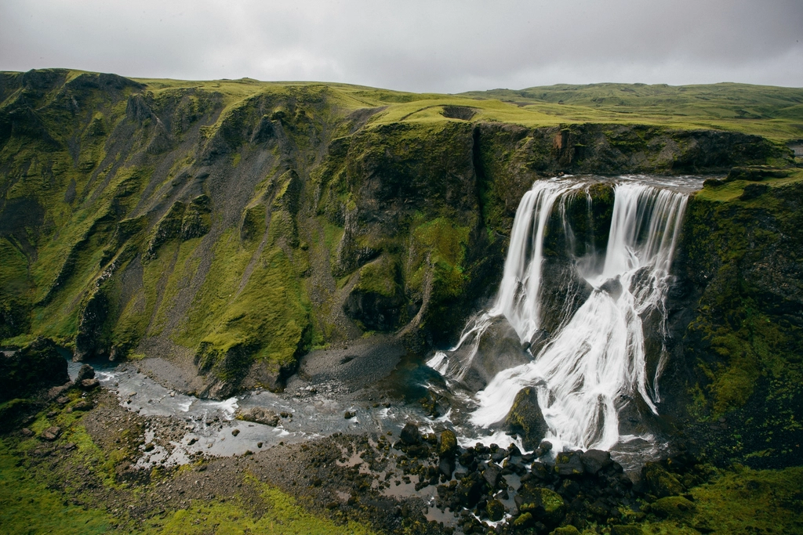
From the first drop to the endless river, water shapes every living landscape.
Rain gathers in moss, slips through roots, finds a stream. Follow it long enough and it carves valleys.
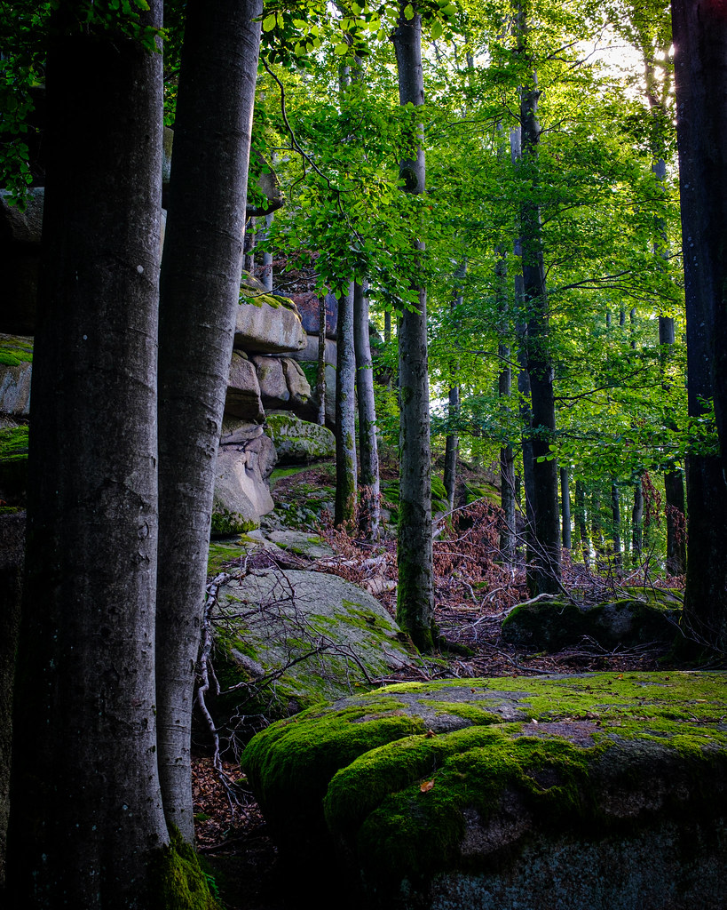
The Ground Beneath Us
Soil, stone, moss and the slow layers of terrain that hold every root in place.
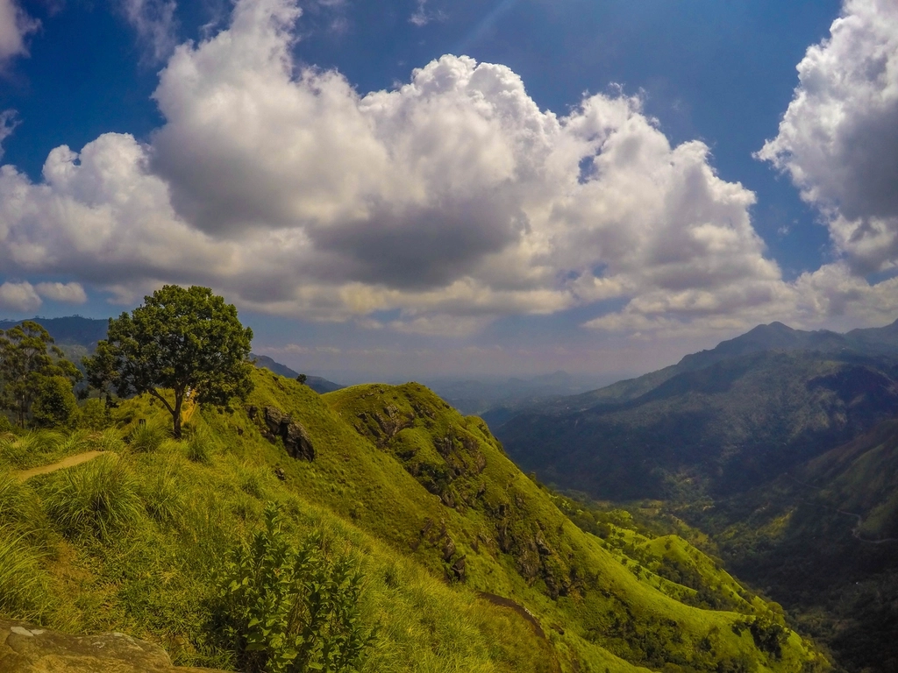
The Invisible Movement
Wind, cloud and mist. The movement you only see in what it carries.
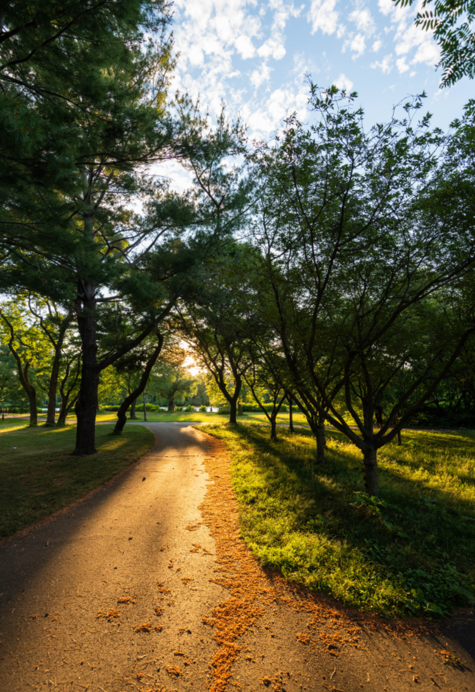
The Language of Nature
Sunlight, shade and the hour-by-hour shift that tells every living thing when to wake.
Forests make rain possible far inland. Rivers carry the forest to the sea. Soil, animals and people sit inside the same loop, and nothing in it stands alone.
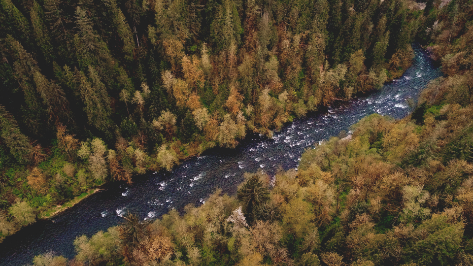
Roots hold the banks, so rivers run clearer and slower after rain.
Floods spread silt across the lowlands and leave the ground richer.
Fungi, insects and seed eaters turn the floor into food for the whole web.
Pollinators, clean water and quiet places: we live downstream of all of it.
Six frames from the journey. Open any of them to see it full size.
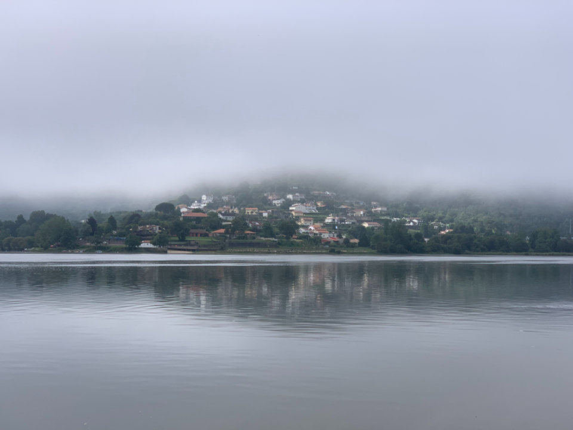
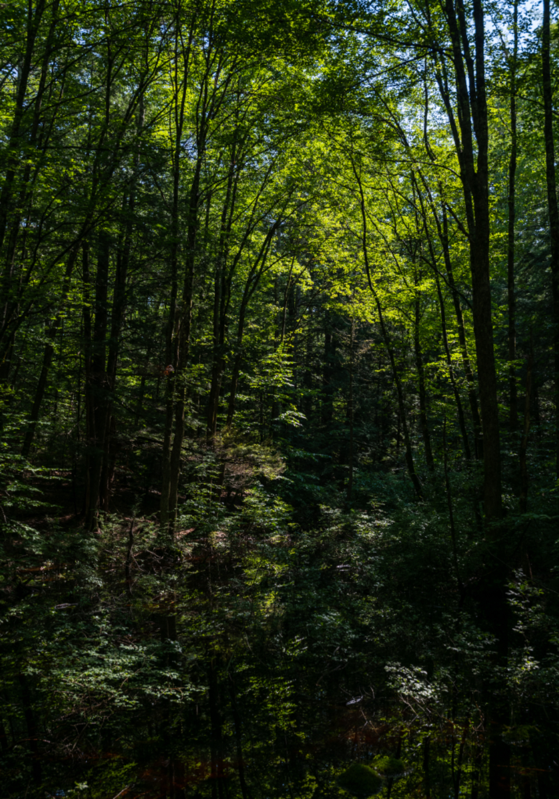
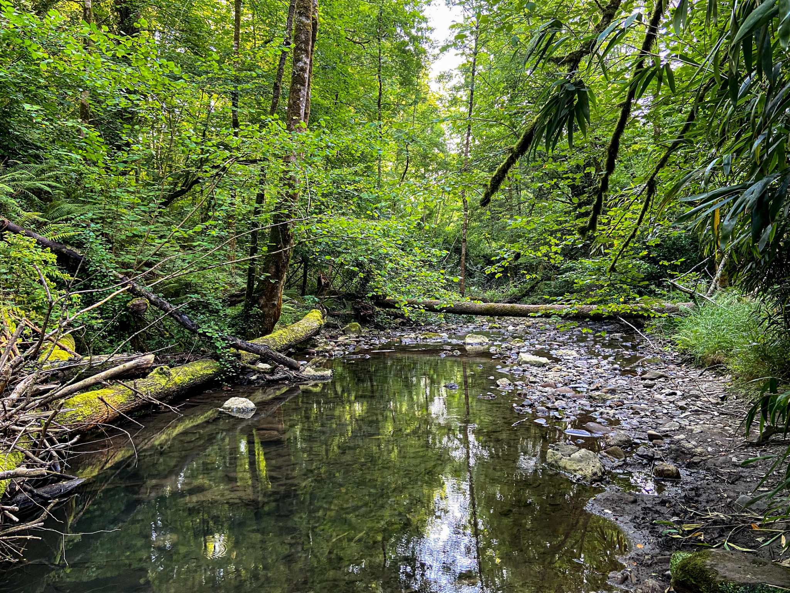
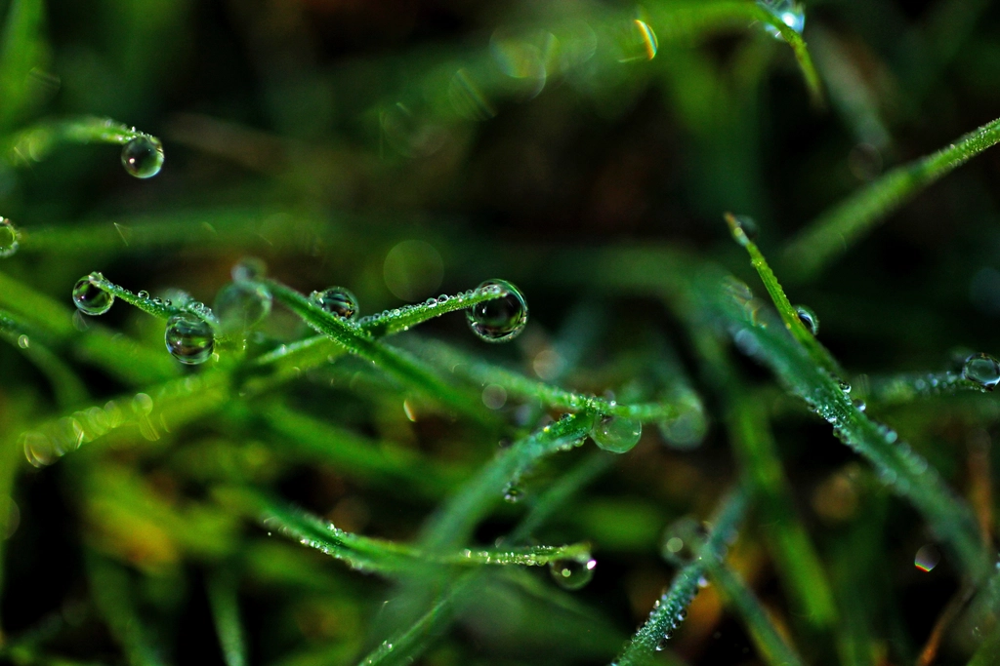
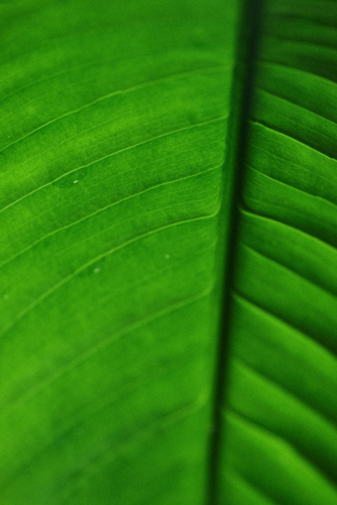
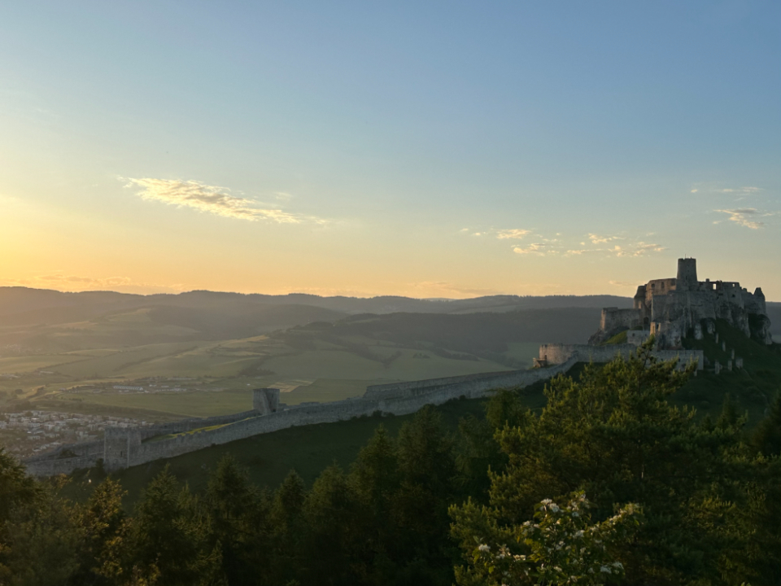
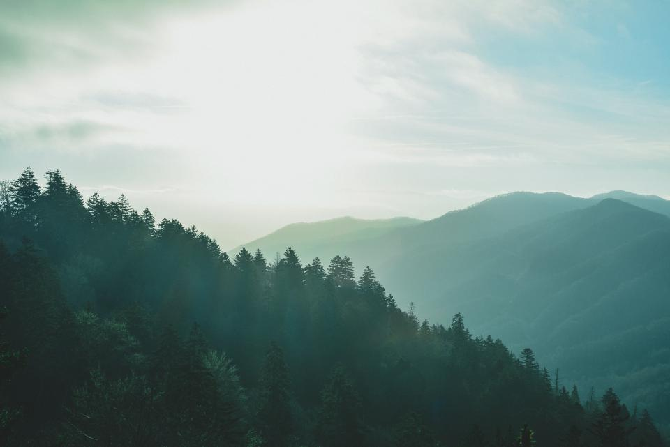
Take a breath. Look closer. Find your way back to nature.